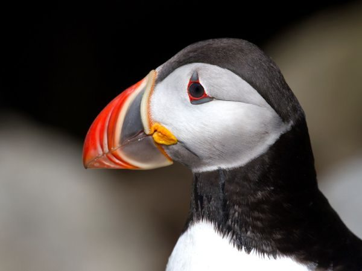
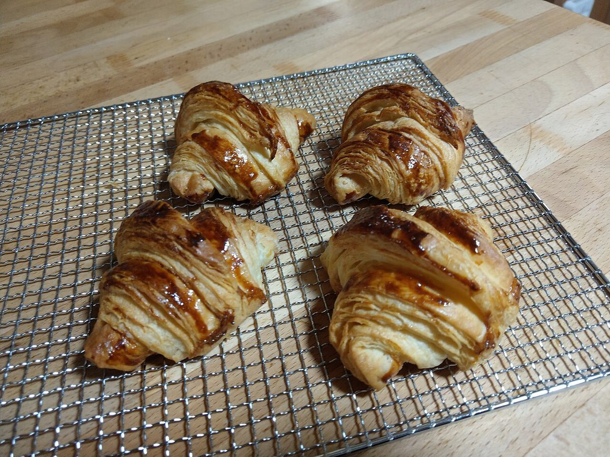

パン屋 / 兵庫県加古川市
PuffinBakery
兵庫県加古川市のパン屋「Bakery Puffin」のご案内ページです。営業時間やメニューなど、詳しいことは準備中。まずはInstagramをのぞいてみてください。

制作側の連想
「Puffin」という名前から考えたこと
お店の名前の由来は分かりません。制作側は「Puffin」という言葉から、ニシツノメドリという海鳥を連想しました。繁殖期には、くちばしが灰青・黄・朱のような色に分かれて見えます。そこでこのページは、くちばしの三つの色を、ページ全体の区切りに使っています。これは制作側の連想で、お店の理念・由来とは無関係です。
灰青 / ねもと
ねもと:このお店について
確認できているのは、所在地・電話番号・Instagramのアカウントです。営業時間・定休日・メニュー・価格・ご予約・駐車場は準備中です。
| 所在地 | 〒675-0024 兵庫県加古川市尾上町長田５１７−１０５ |
|---|---|
| 電話 | 079-490-3236 |
| 営業時間 | 準備中 |
| 定休日 | 準備中 |
| ご予約 | 準備中 |
| 駐車場 | 準備中 |
| SNS | Instagram @puffin_bakery |
黄 / まんなか
まんなか:パンのイメージ写真
下の写真は国外・撮影地不明のフリー素材で、お店の商品ではありません。パンまわりの雰囲気を伝えるためのイメージです。




朱 / さき
さき:Instagramへ
最新の情報はInstagramで確認できるかもしれません。このページには、確認できた情報だけを載せています。